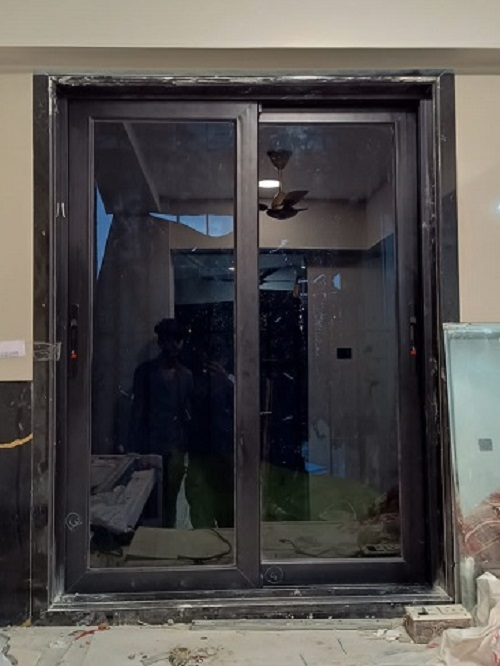
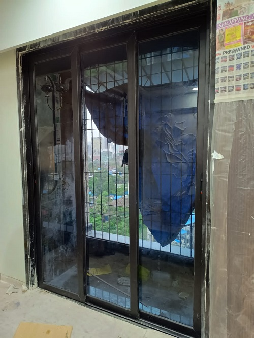

Sliding
About Sliding
Sliding doors, windows, and gates are essential elements in the design and functionality of buildings and outdoor spaces. They provide access, ventilation, security, and aesthetics while contributing to energy efficiency and overall comfort in homes, offices, and various other environments.
Sliding Doors:
1. Design and Functionality:
Sliding doors are a type of door that opens horizontally by sliding along a track. They are designed to save space and provide easy access to the outdoors or between rooms.
2. Materials:
Sliding doors are a type of door that opens horizontally by sliding along a track. They are designed to save space and provide easy access to the outdoors or between rooms.
3. Types:
Patio Sliding Doors:
These doors are commonly used in residential settings to connect indoor living spaces with outdoor patios or gardens.
Closet Sliding Doors:
They are often used for closets and wardrobes, offering easy access to clothing and storage.
Barn Doors:
Sliding barn doors are a rustic and space-saving option that adds character to homes and interior spaces.
4. Advantages:
Space-Saving: Sliding doors do not swing open, making them ideal for smaller rooms or areas with limited space.
Natural Light: Glass sliding doors allow ample natural light to enter a room, reducing the need for artificial lighting during the day.
Indoor-Outdoor Flow: Patio sliding doors create a seamless transition between indoor and outdoor spaces, enhancing the overall living experience.
5. Security and Energy Efficiency:
Sliding doors can be equipped with security features like multi-point locking systems and energy-efficient glazing options for improved safety and insulation.
Windows:
1. Types of Windows:
Single-Hung and Double-Hung Windows:
These windows have two sashes, with single-hung windows allowing only the bottom sash to move and double-hung windows allowing both top and bottom sashes to move.
Casement Windows:
These windows open outward like a door and are hinged on one side. They provide excellent ventilation.
Picture Windows:
Picture windows are fixed and do not open. They are designed to provide unobstructed views and are often used for aesthetics and natural light.
Sliding Windows:
Similar to sliding doors, sliding windows open horizontally along a track.
Bay and Bow Windows:
These project outward from the facade of the building, creating additional interior space and offering panoramic views.
2. Materials:
Window frames can be made from wood, aluminum, uPVC, or a combination of materials. The choice of material affects durability, energy efficiency, and maintenance requirements.
3. Energy Efficiency:
Energy-efficient windows often feature double or triple glazing, low-emissivity coatings, and gas fills between the panes to reduce heat transfer, improve insulation, and lower energy bills.
4. Styles and Designs:
Windows come in various styles and designs to complement architectural aesthetics. These include traditional, contemporary, and custom designs.
5. Benefits:
Well-designed windows offer natural ventilation, daylighting, and views, enhancing indoor comfort and overall quality of life. They also play a significant role in energy conservation and home security.
Gates:
1. Types of Gates:
Swing Gates:
These gates swing open on hinges, similar to traditional doors. They are commonly used for driveways and pedestrian entrances.
Sliding Gates:
Sliding gates move horizontally along a track, making them suitable for areas with limited space.
Automatic Gates:
Many gates are equipped with automation systems, allowing for remote control and enhanced security.
2. Materials:
Gate materials range from wrought iron and steel for security gates to wood, aluminum, and ornamental metals for decorative gates.
3. Security:
Gates serve as a physical barrier, enhancing security for residential and commercial properties. They can be designed with security features like access control systems, intercoms, and video surveillance.
4. Aesthetics:
Decorative gates add curb appeal to homes and create a welcoming entrance. They come in various designs and finishes to match architectural styles.
5. Functionality:
Gates can be manually operated or automated for convenience. Automatic gates can be controlled remotely, enhancing ease of use and security.


